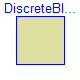
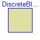

 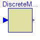
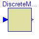

 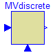
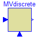


 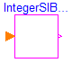
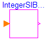
 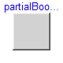
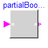
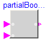
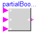
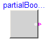
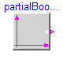
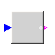
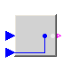
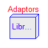
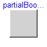
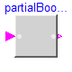
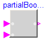
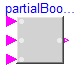
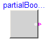
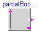
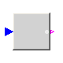
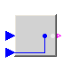
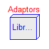
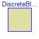
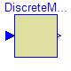
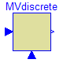
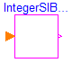
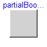
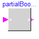
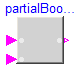
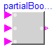
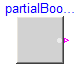
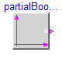
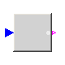
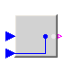
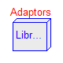
This package contains interface definitions for continuous input/output blocks. In particular it contains the following connector classes:
RealInput Connector with input signals of type Real. RealOutput Connector with output signals of type Real. BooleanInput Connector with input signals of type Boolean. BooleanOutput Connector with output signals of type Boolean. IntegerInput Connector with input signals of type Integer. IntegerOutput Connector with output signals of type Integer. RealSignal Connector with input/output signals of type Real. BooleanSignal Connector with input/output signals of type Boolean. IntegerSignal Connector with input/output signals of type Integer.
The following partial block classes are provided to model continuous control blocks:
BlockIcon Basic graphical layout of continuous block
SO Single Output continuous control block
MO Multiple Output continuous control block
SISO Single Input Single Output continuous control block
SI2SO 2 Single Input / 1 Single Output continuous control block
SIMO Single Input Multiple Output continuous control block
MISO Multiple Input Single Output continuous control block
MIMO Multiple Input Multiple Output continuous control block
MIMOs Multiple Input Multiple Output continuous control block
with same number of inputs and outputs
MI2MO 2 Multiple Input / Multiple Output continuous
control block
SignalSource Base class for continuous signal sources
SVcontrol Single-Variable continuous controller
MVcontrol Multi-Variable continuous controller
The following partial block classes are provided to model discrete control blocks:
DiscreteBlockIcon Basic graphical layout of discrete block DiscreteBlock Base class of discrete control blocks DiscreteSISO Single Input Single Output discrete control block DiscreteMIMO Multiple Input Multiple Output discrete control block DiscreteMIMOs Multiple Input Multiple Output discrete control block SVdiscrete Discrete Single-Variable controller MVdiscrete Discrete Multi-Variable controllerk
The following partial block classes are provided to model Boolean control blocks:
BooleanBlockIcon Basic graphical layout of Boolean block
BooleanSISO Single Input Single Output control block
with signals of type Boolean
BooleanMIMOs Multiple Input Multiple Output control block
with same number of inputs and outputs
MI2BooleanMOs 2 Multiple Input / Boolean Multiple Output
block with same signal lengths
BooleanSignalSource Base class for Boolean signal sources
IntegerMIBooleanMOs Multiple Integer Input Multiple Boolean Output control block
with same number of inputs and outputs
The following partial block classes are provided to model Integer control blocks:
IntegerBlockIcon Basic graphical layout of Integer block IntegerMO Multiple Output control block IntegerSignalSource Base class for Integer signal sources
In addition, a subpackage BusAdaptors is temporarily provided in order to make a signal bus concept available. It will be removed, when the package Block is revised exploiting new Modelica features.
| Name | Description |
|---|---|
| RealSignal | Real port (both input/output possible) |
| BooleanSignal | Boolean port (both input/output possible) |
| IntegerSignal | Integer port (both input/output possible) |
| RealInput | 'input Real' as connector |
| RealOutput | 'output Real' as connector |
| BooleanInput | 'input Boolean' as connector |
| BooleanOutput | 'output Boolean' as connector |
| IntegerInput | 'input Integer' as connector |
| IntegerOutput | 'output Integer' as connector |
| BlockIcon | Basic graphical layout of continuous block |
| SO | Single Output continuous control block |
| MO | Multiple Output continuous control block |
| SISO | Single Input Single Output continuous control block |
| SI2SO | 2 Single Input / 1 Single Output continuous control block |
| SIMO | Single Input Multiple Output continuous control block |
| MISO | Multiple Input Single Output continuous control block |
| MIMO | Multiple Input Multiple Output continuous control block |
| MIMOs | Multiple Input Multiple Output continuous control block with same number of inputs and outputs |
| MI2MO | 2 Multiple Input / Multiple Output continuous control block |
| SignalSource | Base class for continuous signal source |
| SVcontrol | Single-Variable continuous controller |
| MVcontrol | Multi-Variable continuous controller |
| DiscreteBlockIcon | Graphical layout of discrete block component icon |
| DiscreteBlock | Base class of discrete control blocks |
| DiscreteSISO | Single Input Single Output discrete control block |
| DiscreteMIMO | Multiple Input Multiple Output discrete control block |
| DiscreteMIMOs | Multiple Input Multiple Output discrete control block |
| SVdiscrete | Discrete Single-Variable controller |
| MVdiscrete | Discrete Multi-Variable controller |
| BooleanBlockIcon | Basic graphical layout of Boolean block |
| BooleanSISO | Single Input Single Output control block with signals of type Boolean |
| BooleanMIMOs | Multiple Input Multiple Output continuous control block with same number of inputs and outputs of boolean type |
| MI2BooleanMOs | 2 Multiple Input / Boolean Multiple Output block with same signal lengths |
| SI2BooleanSO | 2 Single Input / Boolean Single Output block |
| BooleanSignalSource | Base class for Boolean signal sources |
| IntegerBlockIcon | Basic graphical layout of Integer block |
| IntegerSO | Single Integer Output continuous control block |
| IntegerMO | Multiple Integer Output continuous control block |
| IntegerSignalSource | Base class for continuous Integer signal source |
| IntegerSIBooleanSO | Integer Input Boolean Output continuous control block |
| IntegerMIBooleanMOs | Multiple Integer Input Multiple Boolean Output continuous control block with same number of inputs and outputs |
| partialBooleanBlockIcon | Basic graphical layout of logical block |
| partialBooleanSISO | partialSingle Input / Single Output Boolean block |
| partialBooleanSI2SO | partial2 Single Input / 1 Single Output Boolean block |
| partialBooleanSI3SO | partial2 Single Input / 1 Single Output Boolean block |
| partialBooleanSI | partialSingle Input Boolean block |
| partialBooleanSO | partialSingle Output Boolean block |
| partialBooleanSource | partialBoolean source block |
| partialBooleanThresholdComparision | partialBoolean block to compare the Real input u with a threshold |
| partialBooleanComparision | partialBoolean block to compare two Real inputs u1 and u2 |
| Adaptors | Components to send signals to the bus or receive signals from the bus |
Modelica.Blocks.Interfaces.BooleanOutput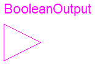
connector BooleanOutput = output BooleanSignal "'output Boolean' as connector";
Modelica.Blocks.Interfaces.BooleanInput
connector BooleanInput = input BooleanSignal "'input Boolean' as connector";
| Name | Default | Description |
|---|---|---|
| replaceable type SignalType | Real |
connector RealSignal "Real port (both input/output possible)" replaceable type SignalType = Real; extends SignalType; end RealSignal;
connector IntegerSignal = Integer "Integer port (both input/output possible)";
connector BooleanSignal = Boolean "Boolean port (both input/output possible)";
Modelica.Blocks.Interfaces.SISO

partial block SISO "Single Input Single Output continuous control block" extends BlockIcon; RealInput u "Connector of Real input signal"; RealOutput y "Connector of Real output signal"; end SISO;
Modelica.Blocks.Interfaces.SVcontrol

partial block SVcontrol "Single-Variable continuous controller" extends BlockIcon; RealInput u_s "Connector of setpoint input signal"; RealInput u_m "Connector of measurement input signal"; RealOutput y "Connector of actuator output signal"; end SVcontrol;
Modelica.Blocks.Interfaces.MIMO

Block has a continuous input and a continuous output signal vector. The signal sizes of the input and output vector may be different.
| Name | Default | Description |
|---|---|---|
| nin | 1 | Number of inputs |
| nout | 1 | Number of outputs |
partial block MIMO
"Multiple Input Multiple Output continuous control block"
extends BlockIcon;
parameter Integer nin=1 "Number of inputs";
parameter Integer nout=1 "Number of outputs";
RealInput u[
nin] "Connector of Real input signals";
RealOutput y[
nout] "Connector of Real output signals";
end MIMO;
Modelica.Blocks.Interfaces.DiscreteSISO

| Name | Default | Description |
|---|---|---|
| samplePeriod | 0.1 | Sample period of component [s] |
| startTime | 0 | First sample time instant [s] |
partial block DiscreteSISO "Single Input Single Output discrete control block" extends DiscreteBlock; Modelica.Blocks.Interfaces.RealInput u "Continuous input signal"; Modelica.Blocks.Interfaces.RealOutput y "Continuous output signal"; end DiscreteSISO;

Block has a continuous input and a continuous output signal vector which are sampled due to the defined samplePeriod parameter.
| Name | Default | Description |
|---|---|---|
| samplePeriod | 0.1 | Sample period of component [s] |
| startTime | 0 | First sample time instant [s] |
| nin | 1 | Number of inputs |
| nout | 1 | Number of outputs |
partial block DiscreteMIMO
"Multiple Input Multiple Output discrete control block"
extends DiscreteBlock;
parameter Integer nin=1 "Number of inputs";
parameter Integer nout=1 "Number of outputs";
Modelica.Blocks.Interfaces.RealInput u[
nin] "Continuous input signals";
Modelica.Blocks.Interfaces.RealOutput y[
nout] "Continuous output signals";
end DiscreteMIMO;
partial block DiscreteBlockIcon "Graphical layout of discrete block component icon" end DiscreteBlockIcon;
Modelica.Blocks.Interfaces.RealInput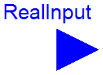
| Name | Default | Description |
|---|---|---|
| replaceable type SignalType | Real |
connector RealInput = input RealSignal "'input Real' as connector";
Modelica.Blocks.Interfaces.RealOutput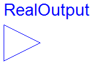
| Name | Default | Description |
|---|---|---|
| replaceable type SignalType | Real |
connector RealOutput = output RealSignal "'output Real' as connector";
Modelica.Blocks.Interfaces.IntegerInput
connector IntegerInput = input IntegerSignal "'input Integer' as connector";
Modelica.Blocks.Interfaces.IntegerOutput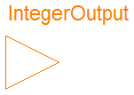
connector IntegerOutput = output IntegerSignal "'output Integer' as connector";
Modelica.Blocks.Interfaces.BlockIcon
partial block BlockIcon "Basic graphical layout of continuous block" equation end BlockIcon;
Modelica.Blocks.Interfaces.SO

partial block SO "Single Output continuous control block" extends BlockIcon; RealOutput y "Connector of Real output signal"; end SO;
Modelica.Blocks.Interfaces.MO

| Name | Default | Description |
|---|---|---|
| nout | 1 | Number of outputs |
partial block MO "Multiple Output continuous control block"
extends BlockIcon;
parameter Integer nout(min=1) = 1 "Number of outputs";
RealOutput y[
nout] "Connector of Real output signals";
end MO;
Modelica.Blocks.Interfaces.SI2SO

Block has two input vectors u1 and u2 and one output vector y. All signals are scalar.
partial block SI2SO "2 Single Input / 1 Single Output continuous control block" extends BlockIcon; RealInput u1 "Connector of Real input signal 1"; RealInput u2 "Connector of Real input signal 2"; RealOutput y "Connector of Real output signal"; end SI2SO;
Modelica.Blocks.Interfaces.SIMO

Block has one continuous input signal and a vector of continuous output signals.
| Name | Default | Description |
|---|---|---|
| nout | 1 | Number of outputs |
partial block SIMO
"Single Input Multiple Output continuous control block"
extends BlockIcon;
parameter Integer nout=1 "Number of outputs";
RealInput u "Connector of Real input signal";
RealOutput y[ nout] "Connector of Real output signals";
end SIMO;
Modelica.Blocks.Interfaces.MISO

Block has a vector of continuous input signals and one continuous output signal.
| Name | Default | Description |
|---|---|---|
| nin | 1 | Number of inputs |
partial block MISO
"Multiple Input Single Output continuous control block"
extends BlockIcon;
parameter Integer nin=1 "Number of inputs";
RealInput u[
nin] "Connector of Real input signals";
RealOutput y "Connector of Real output signal";
end MISO;
Modelica.Blocks.Interfaces.MIMOs

Block has a continuous input and a continuous output signal vector where the signal sizes of the input and output vector are identical.
| Name | Default | Description |
|---|---|---|
| n | 1 | Number of inputs (= number of outputs) |
partial block MIMOs
"Multiple Input Multiple Output continuous control block with same number of inputs and outputs"
extends BlockIcon;
parameter Integer n=1 "Number of inputs (= number of outputs)";
RealInput u[
n] "Connector of Real input signals";
RealOutput y[
n] "Connector of Real output signals";
end MIMOs;
Modelica.Blocks.Interfaces.MI2MO

Block has two Input vectors u1 and u2 and one output vector y. All vectors have the same number of elements.
| Name | Default | Description |
|---|---|---|
| n | 1 | Dimension of input and output vectors. |
partial block MI2MO
"2 Multiple Input / Multiple Output continuous control block"
extends BlockIcon;
parameter Integer n=1 "Dimension of input and output vectors.";
RealInput u1[
n] "Connector 1 of Real input signals";
RealInput u2[
n] "Connector 2 of Real input signals";
RealOutput y[
n] "Connector of Real output signals";
end MI2MO;
Modelica.Blocks.Interfaces.SignalSource

| Name | Default | Description |
|---|---|---|
| offset | 0 | offset of output signal |
| startTime | 0 | output = offset for time < startTime [s] |
partial block SignalSource "Base class for continuous signal source" extends SO; parameter Real offset=0 "offset of output signal"; parameter SIunits.Time startTime = 0 "output = offset for time < startTime"; end SignalSource;
Modelica.Blocks.Interfaces.MVcontrol

| Name | Default | Description |
|---|---|---|
| nu_s | 1 | Number of setpoint inputs |
| nu_m | 1 | Number of measurement inputs |
| ny | 1 | Number of actuator outputs |
partial block MVcontrol "Multi-Variable continuous controller"
extends BlockIcon;
parameter Integer nu_s=1 "Number of setpoint inputs";
parameter Integer nu_m=1 "Number of measurement inputs";
parameter Integer ny=1 "Number of actuator outputs";
RealInput u_s[
nu_s] "Connector of setpoint input signals";
RealInput u_m[
nu_m] "Connector of measurement input signals";
RealOutput y[
ny] "Connector of actuator output signals";
end MVcontrol;
Modelica.Blocks.Interfaces.DiscreteBlock
| Name | Default | Description |
|---|---|---|
| samplePeriod | 0.1 | Sample period of component [s] |
| startTime | 0 | First sample time instant [s] |
partial block DiscreteBlock "Base class of discrete control blocks"
extends DiscreteBlockIcon;
parameter SI.Time samplePeriod( min=100*Modelica.Constants.eps) = 0.1
"Sample period of component";
parameter SI.Time startTime = 0 "First sample time instant";
protected
output Boolean sampleTrigger "True, if sample time instant";
output Boolean firstTrigger "Rising edge signals first sample instant";
equation
sampleTrigger = sample(startTime, samplePeriod);
when sampleTrigger then
firstTrigger = time <= startTime + samplePeriod/2;
end when;
end DiscreteBlock;
Modelica.Blocks.Interfaces.DiscreteMIMOs

Block has a continuous input and a continuous output signal vector where the signal sizes of the input and output vector are identical. These signals are sampled due to the defined samplePeriod parameter.
| Name | Default | Description |
|---|---|---|
| n | 1 | Number of inputs (= number of outputs) |
| samplePeriod | 0.1 | Sample period of component [s] |
| startTime | 0 | First sample time instant [s] |
partial block DiscreteMIMOs
"Multiple Input Multiple Output discrete control block"
parameter Integer n=1 "Number of inputs (= number of outputs)";
extends DiscreteBlock;
Modelica.Blocks.Interfaces.RealInput u[
n] "Continuous input signals";
Modelica.Blocks.Interfaces.RealOutput y[
n] "Continuous output signals";
end DiscreteMIMOs;
Modelica.Blocks.Interfaces.SVdiscrete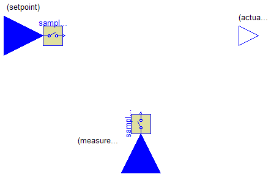
| Name | Default | Description |
|---|---|---|
| samplePeriod | 0.1 | Sample period of component [s] |
| startTime | 0 | First sample time instant [s] |
partial block SVdiscrete "Discrete Single-Variable controller"
extends DiscreteBlock;
Discrete.Sampler sampler_s(
final samplePeriod=samplePeriod,
final startTime=startTime);
Discrete.Sampler sampler_m(
final samplePeriod=samplePeriod,
final startTime=startTime);
Modelica.Blocks.Interfaces.RealInput u_s
"Continuous scalar setpoint input signal";
Modelica.Blocks.Interfaces.RealInput u_m
"Continuous scalar measurement input signal";
Modelica.Blocks.Interfaces.RealOutput y
"Continuous scalar actuator output signal";
equation
connect(u_s, sampler_s.u);
connect(u_m, sampler_m.u);
end SVdiscrete;
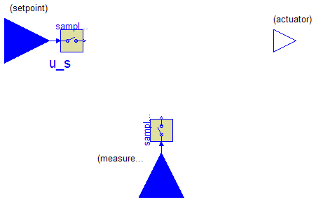
| Name | Default | Description |
|---|---|---|
| samplePeriod | 0.1 | Sample period of component [s] |
| startTime | 0 | First sample time instant [s] |
| nu_s | 1 | Number of setpoint inputs |
| nu_m | 1 | Number of measurement inputs |
| ny | 1 | Number of actuator outputs |
partial block MVdiscrete "Discrete Multi-Variable controller"
extends DiscreteBlock;
parameter Integer nu_s=1 "Number of setpoint inputs";
parameter Integer nu_m=1 "Number of measurement inputs";
parameter Integer ny=1 "Number of actuator outputs";
Discrete.Sampler sampler_s[
nu_s](
each final samplePeriod=samplePeriod,
each final startTime=startTime);
Discrete.Sampler sampler_m[
nu_m](
each final samplePeriod=samplePeriod,
each final startTime=startTime);
Modelica.Blocks.Interfaces.RealInput u_s[
nu_s]
"Continuous setpoint input signals";
Modelica.Blocks.Interfaces.RealInput u_m[
nu_m]
"Continuous measurement input signals";
Modelica.Blocks.Interfaces.RealOutput y[
ny]
"Continuous actuator output signals";
equation
connect(u_s, sampler_s.u);
connect(u_m, sampler_m.u);
end MVdiscrete;
Modelica.Blocks.Interfaces.BooleanBlockIcon
partial block BooleanBlockIcon "Basic graphical layout of Boolean block" equation end BooleanBlockIcon;
Modelica.Blocks.Interfaces.BooleanSISO

partial block BooleanSISO "Single Input Single Output control block with signals of type Boolean" extends BooleanBlockIcon; public BooleanInput u "Connector of Boolean input signal"; BooleanOutput y "Connector of Boolean output signal"; end BooleanSISO;
Modelica.Blocks.Interfaces.BooleanMIMOs

Block has a continuous input and a continuous output signal vector where the signal sizes of the input and output vector are identical and of type Boolean.
| Name | Default | Description |
|---|---|---|
| n | 1 | Number of inputs (= number of outputs) |
partial block BooleanMIMOs
"Multiple Input Multiple Output continuous control block with same number of inputs and outputs of boolean type"
extends BooleanBlockIcon;
parameter Integer n=1 "Number of inputs (= number of outputs)";
BooleanInput u[
n] "Connector of Boolean input signals";
BooleanOutput y[
n] "Connector of Boolean output signals";
end BooleanMIMOs;
Modelica.Blocks.Interfaces.MI2BooleanMOs

Block has two Boolean input vectors u1 and u2 and one Boolean output vector y. All vectors have the same number of elements.
| Name | Default | Description |
|---|---|---|
| n | 1 | Dimension of input and output vectors. |
partial block MI2BooleanMOs
"2 Multiple Input / Boolean Multiple Output block with same signal lengths"
extends BooleanBlockIcon;
parameter Integer n=1 "Dimension of input and output vectors.";
RealInput u1[
n] "Connector 1 of Boolean input signals";
RealInput u2[
n] "Connector 2 of Boolean input signals";
BooleanOutput y[
n] "Connector of Boolean output signals";
end MI2BooleanMOs;
Modelica.Blocks.Interfaces.SI2BooleanSO

Block has two Boolean inputs u1 and u2 and one Boolean output y.
partial block SI2BooleanSO "2 Single Input / Boolean Single Output block" extends BooleanBlockIcon; input RealInput u1 "Connector 1 of Boolean input signals"; input RealInput u2 "Connector 2 of Boolean input signals"; output BooleanOutput y "Connector of Boolean output signals"; end SI2BooleanSO;
Modelica.Blocks.Interfaces.BooleanSignalSource

partial block BooleanSignalSource "Base class for Boolean signal sources" extends BooleanBlockIcon; BooleanOutput y "Connector of Boolean output signal"; end BooleanSignalSource;
Modelica.Blocks.Interfaces.IntegerBlockIcon
partial block IntegerBlockIcon "Basic graphical layout of Integer block" equation end IntegerBlockIcon;
Modelica.Blocks.Interfaces.IntegerSO

partial block IntegerSO "Single Integer Output continuous control block" extends IntegerBlockIcon; IntegerOutput y "Connector of Integer output signal"; end IntegerSO;
Modelica.Blocks.Interfaces.IntegerMO

| Name | Default | Description |
|---|---|---|
| nout | 1 | Number of outputs |
partial block IntegerMO
"Multiple Integer Output continuous control block"
extends IntegerBlockIcon;
parameter Integer nout(min=1) = 1 "Number of outputs";
IntegerOutput y[
nout] "Connector of Integer output signals";
end IntegerMO;
Modelica.Blocks.Interfaces.IntegerSignalSource

| Name | Default | Description |
|---|---|---|
| offset | 0 | offset of output signal |
| startTime | 0 | y = offset for time < startTime [s] |
partial block IntegerSignalSource "Base class for continuous Integer signal source" extends IntegerSO; parameter Integer offset=0 "offset of output signal"; parameter SI.Time startTime = 0 "y = offset for time < startTime"; end IntegerSignalSource;

Block has a continuous Integer input and a continuous Boolean output signal.
partial block IntegerSIBooleanSO "Integer Input Boolean Output continuous control block" extends BooleanBlockIcon; IntegerInput u "Connector of Integer input signal"; BooleanOutput y "Connector of Boolean output signal"; end IntegerSIBooleanSO;
Modelica.Blocks.Interfaces.IntegerMIBooleanMOs

Block has a continuous integer input and a continuous boolean output signal vector where the signal sizes of the input and output vector are identical.
| Name | Default | Description |
|---|---|---|
| n | 1 | Number of inputs (= number of outputs) |
partial block IntegerMIBooleanMOs
"Multiple Integer Input Multiple Boolean Output continuous control block with same number of inputs and outputs"
extends BooleanBlockIcon;
parameter Integer n=1 "Number of inputs (= number of outputs)";
IntegerInput u[
n] "Connector of Integer input signals";
BooleanOutput y[
n] "Connector of Boolean output signals";
end IntegerMIBooleanMOs;
partial block partialBooleanBlockIcon "Basic graphical layout of logical block" equation end partialBooleanBlockIcon;

partial block partialBooleanSISO
"partialSingle Input / Single Output Boolean block"
extends partialBooleanBlockIcon;
Blocks.Interfaces.BooleanInput u;
Blocks.Interfaces.BooleanOutput y;
equation
end partialBooleanSISO;
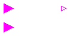
partial block partialBooleanSI2SO
"partial2 Single Input / 1 Single Output Boolean block"
extends partialBooleanBlockIcon;
Blocks.Interfaces.BooleanInput u1;
Blocks.Interfaces.BooleanInput u2;
Blocks.Interfaces.BooleanOutput y;
end partialBooleanSI2SO;
partial block partialBooleanSI3SO
"partial2 Single Input / 1 Single Output Boolean block"
extends partialBooleanBlockIcon;
Blocks.Interfaces.BooleanInput u1;
Blocks.Interfaces.BooleanInput u2;
Blocks.Interfaces.BooleanInput u3;
Blocks.Interfaces.BooleanOutput y;
end partialBooleanSI3SO;

partial block partialBooleanSI "partialSingle Input Boolean block"
extends partialBooleanBlockIcon;
Blocks.Interfaces.BooleanInput u;
equation
end partialBooleanSI;

partial block partialBooleanSO "partialSingle Output Boolean block"
Blocks.Interfaces.BooleanOutput y;
extends partialBooleanBlockIcon;
equation
end partialBooleanSO;
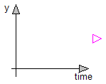
partial block partialBooleanSource "partialBoolean source block" extends partialBooleanBlockIcon; Blocks.Interfaces.BooleanOutput y; end partialBooleanSource;

| Name | Default | Description |
|---|---|---|
| threshold | 0 | Comparison with respect to threshold |
partial block partialBooleanThresholdComparision "partialBoolean block to compare the Real input u with a threshold" parameter Real threshold=0 "Comparison with respect to threshold"; Blocks.Interfaces.RealInput u; Blocks.Interfaces.BooleanOutput y; end partialBooleanThresholdComparision;

partial block partialBooleanComparision "partialBoolean block to compare two Real inputs u1 and u2" Blocks.Interfaces.RealInput u1; Blocks.Interfaces.RealInput u2; Blocks.Interfaces.BooleanOutput y; end partialBooleanComparision;